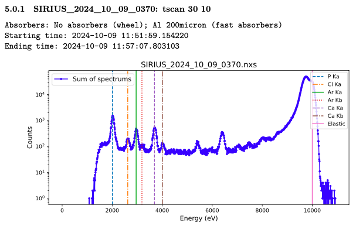
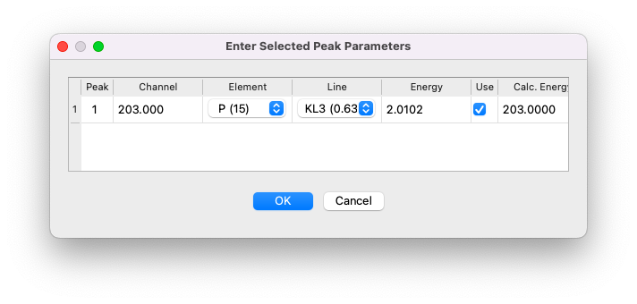
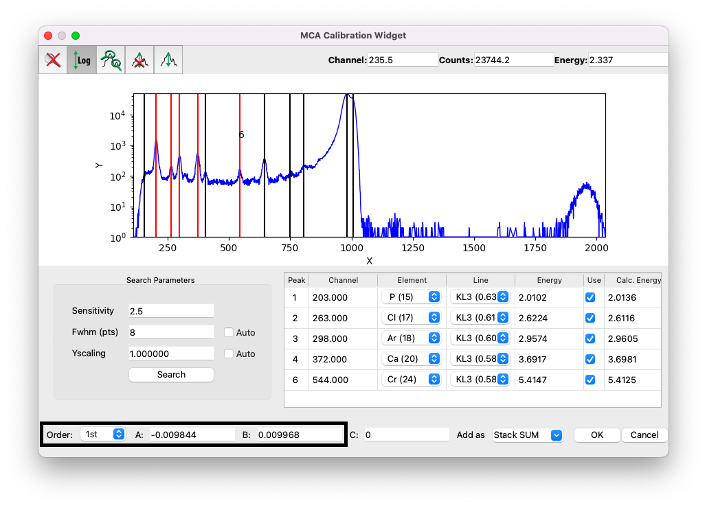

Optional: energy calibration#
Analyzing XRF data requires calibrating the relationship between detector channels and energy (in keV). In the fitting procedure described in this tutorial, the calibration parameters are treated as free fitting parameters. However, in some cases, it may be necessary to perform the calibration beforehand and not leave it as free parameters during the fitting process.
PyMca provides a second-order calibration formula:
However, a linear calibration (\(C=0\)) is preferred. For SIRIUS data, the calibration is typically close to \(B = 0.0099\) - \(0.01\), meaning each channel corresponds to approximately 9.9–10 eV.
Click on the Calibrate button to start the process.

If you already have calibration values, you can click Edit and manually input them (ensure values are in keV). For this tutorial, we will demonstrate how to determine these values directly.
Calibrate with known peaks#
Calibration requires data with well-defined peaks of known elements. Keep in mind that calibration may drift during beamtime and, if it is the case, require adjustment. Here, we’ll perform the calibration directly using the scan to be analyzed.
After clicking
Calibrate, selectCompute.Leave the parameters unchanged and click
Search.

PyMca will identify potential peaks for calibration. It may detect Rayleigh and Compton peaks near the incident beam energy, but these should not be used for calibration due to potential inaccuracies. Only elemental peaks should be selected, avoiding non-elemental artifacts such as sum or escape peaks [42, 43].
To identify peak energies, refer to the notebook used during beamtime:

Alternatively:
Use the
Tools > Identify Peaksoption in PyMca’s main window (you will need to exit the calibration interface first).Refer to external resources like Hephaestus or peak energy tables.
Example calibration#
For example, if a peak appears at channel 203 and is identified as phosphorus (P), assign it to the K\(\rm \alpha1\) line (K-L3 transition). Refer to charts like this one from Hephaestus to match lines with transitions:

Select the peak, choose the element (P), and assign the line (K\(\rm \alpha1\)).
Click
OK.

Repeat this process for other peaks, such as:
Chlorine (Cl) K\(\rm \alpha1\)
Argon (Ar) K\(\rm \alpha1\)
Calcium (Ca) K\(\rm \alpha1\)
Chromium (Cr) K\(\rm \alpha1\) (not from the sample, but from metalic pieces in the beam path).
Finalizing calibration#
Set the interpolation order to
1stfor linear calibration.Record the coefficients \(A\) and \(B\). For this example, the calibration equation is:
\[E{\rm[keV]} = -0.009844 + 0.009968 \times {\rm channel}.\]Verify calibration by comparing the
EnergyandCalc. Energycolumns in the table.
Once satisfied, click OK. The calibration will be stored under the default name Stack SUM.

Finally, select the calibration Stack SUM, and the spectrum will be displayed with energy on the x-axis.